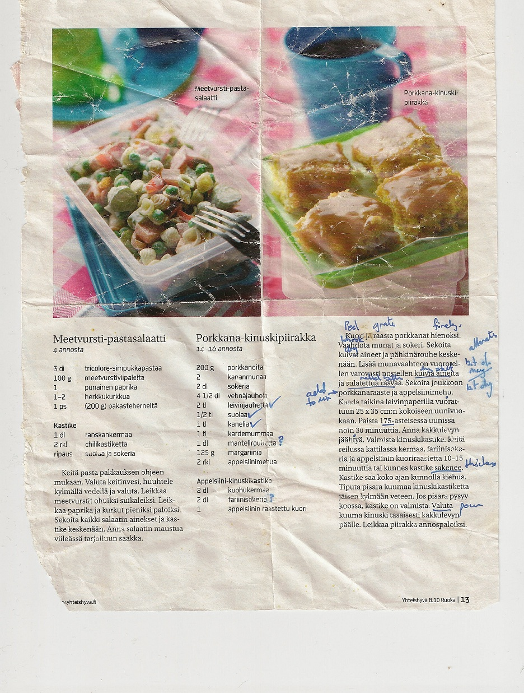
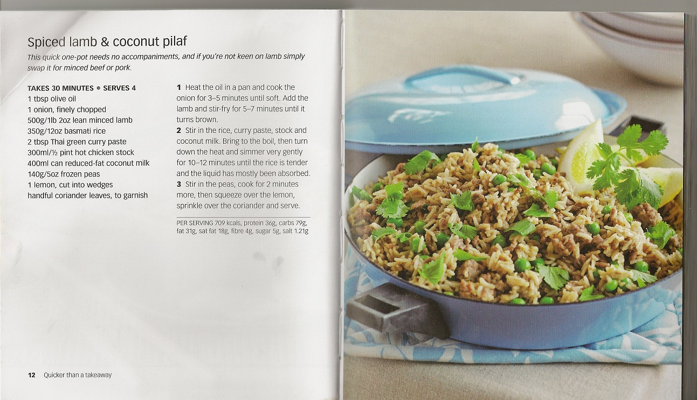
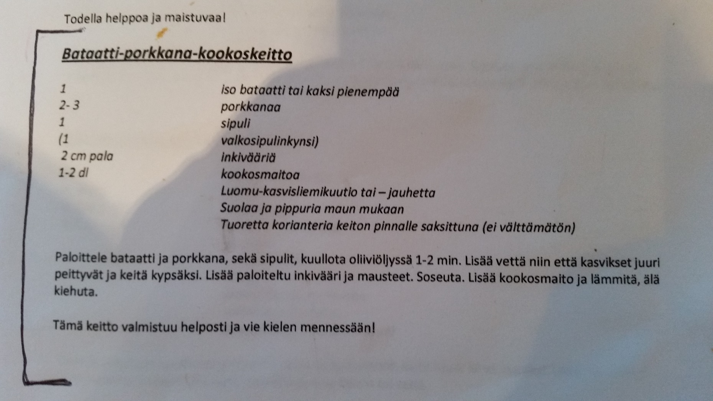

|
General Ideas Pippuripihvi Steamed Salmon Carbonara Porkanakakku Spiced Lamb and Coconut Pilaf Spag Bol Makaroni Laatikko Lentil Soup Thai Curry Nasi Goreng Cake of the Day rahka Pork and Sweet Potato Wedges Tofu Wok Bataatti Porkkana Keitto Mustikka Pirakka Pytti Pannu Asian Noodle Salad General IdeasPierogi / Dumplings and Smetana from Eestonian shop in OlariPippuripihviBaby carrots2 steaks (sisa file) 150g each potatoes pippurimix veg oil cream (kuohokerma) cremebonjour Pepper flavour salt dragon/tarragon margarine 1. Roast potatoes in oven (with veg oil) for 45 mins at 200oC 2. a) Steaks get rolled in peppermix. Put in hot oil/butter in frying pan till blood seeps through (medium heat) b) Take out steaks and into pan put 1dl cream and about 2 dls of cremebonjour. c) heat till the cream is thick 3. Carrots.. about 10 mins in boiling water, drain and put salt / dragon / margarine on carrots SalmonSalmon (350g for 2 people)Citruunapippuri Rosepepper CremeBonjour - yrttitarha oil remember rice/potatoes 1. Oil pan and put salmon in 2. Add citruunapippuri, rosepepper and creme bonjour. 3. Put 2.5 dls of water into steam bit of oven 4. Put oven to Interv Höyry 50/50. 85oC for 20 mins remember rice/potatoes CarbonaraPanchetta (Italian fine bacon) - or other salty strips of bacon. Maybe 200g?Onion Garlic Cherry tomatoes Flat pasta Raw eggs Pepper
Fry onion and garlic in olive oil. Throw in the panchetta/bacon. Wait till it becomes a bit crispy, throw in halved cherry tomatoes PorkanakakkuSpiced Lamb and Coconut PilafSpaghetti BologneseThis is one of my favourite recipes for Spaghetti Bolognese. If your child won’t eat vegetables then spaghetti bolognaise recipe is a good way to hide them. The apple is an unusual ingredient but adds a sweetness that children enjoy. This recipe for spaghetti bolognese very versatile,. Try mixing it with fusilli, top with béchamel sauce, sprinkle with grated cheese and brown under the grill. Ingredients 1tbsp olive oil 1 small onion, finely chopped (90g) 1 small leek, thinly sliced (35g) ½ stick celery, diced (15g) ¼ small red pepper, diced (25g) 1 small carrot, peeled and grated (30g) ½ eating apple, peeled, cored and grated (75g) 1 clove garlic, crushed 1 x 400g/14oz tin chopped tomatoes 450g/1lb minced beef 4 tbsp tomato puree 2 tbsp tomato ketchup 250ml/9fl oz beef stock ¼ tsp dried oregano Method Heat the oil in a large frying pan and sauté the vegetables, apple and garlic for 10 minutes, until soft. Transfer to a blender and add the tomatoes then whiz until smooth. Wipe the pan out with a piece of kitchen paper then add the mince and fry over a medium-high heat, breaking the mince up with a wooden spoon, until browned (you may need to do this in two batches). If your child likes a finer texture then you can transfer the browned mince to a food processor and whiz until well chopped. Add the tomato and vegetable sauce to the mince then stir in the tomato puree, ketchup, stock and oregano. Bring to a simmer and cook for 40-45 minutes, until the sauce is thick. Season to taste with salt and pepper. Makes 6 portions Suitable for freezing Makaroni LaatikkoFry 400g mince Boil water in pan add one vege stock cube add 5dls dry macaroni cook for 10 mins Add to mince: 1tsp rakuna 2 tsps basilika 1/2 tsp black pepper 2 peeled and grated carrots Drain pasta, put back in pot,add mince mix oven at 175oC grease cassarole dish with oil. Add macaroni and mince In BOWL mix 5 dls milk + 2 raw eggs + 1 tblspn sugar + tsp white pepper pour over mince / macaroni grate cheese and sprinkle over mix sprinkle oregano put low in oven self for 1 hour Lentil Soup1 turnip chopped and peeled 6 carrots chopped and peeled split peas 4 handfulls lentils 4 handfuls 1 leak chopped 2 onions chopped 3 beef stock cubes Put everything in a pot 1/2 fill with water bring to boil and simmer for 2 hours Thai CurryHere’s my favorite Thai Curry recipe. This amount is for 4 – 6 persons and it’s that I usually prepare quite a big amount and eat it for several days. If you want a smaller amount, just cut all the ingredients in half. I have a big wok pan to prepare it on, you need some volume for all that stuff. Ingredients: - 2 x 400 ml of coconut milk - 2 big spoons of palm sugar / coconut sugar - 4 chilli peppers - 2 big spoons of red curry paste (or masaman curry or pnang curry) – I buy my red curry from this „Aseanic Trading Oy“ which is in Hakaniemi – they have the authentic stuff and it’s cheap. The amount you put in depends on how intense you want the falvor to be, so experiment. - 6-8 minimais - A pack of sokeriherneet (I think it’s 200-300 grams or something, they usually sell them in these packs) - 10 Dried Lime leaves - 2 big spoons of Thai kalakastiket - 400 grams of chicken fillet pieces (perfectly fine without the chicken as well, if you want a veggie plate. When I do substitute chicken, i put in munakois) - rice Preparation: 1. Put some (two spoonfuls) coconut milk on the pan and stir it until it melts (it’s usually in a solid form when you open the can) 2. Add the curry paste and mix/dissolve it in the coconut milk 3. Add the chicken and stir-fry it for a few minutes 4. Add the rest of the coconut milk and mix it 5. Add the cut sokeriherneet, minimais pieces (I usually cut the herneet in half and minimais horizontally + vertically) 6. Let it boil for 5 minutes 7. Add the kalakastike, chilli peppers (chopped), palm sugar and lime leaves 8. Let it boil for another ~10 minutes or until the vegetables are ready (not too soft and not uncooked) Serve with basmati rice Nasi Goreng
Cake Of The DayPart1. mix well! 2 eggs 100g baking margarine (Sunnuntai), melted 1 dl milk Part2. mix well! 3.5 dl flour 2 dl sugar 2 tsp baking powder 2 tsp vanilla sugar or extract Mix both parts together. Spread evenly on an oven tray (deep one) lined with baking paper Add dollops of apple puree (or whatever fruit) evenly accross the base Add crumbs (pinch together with fingers until crumbs appear): 50g baking margerine 1/2 dl sugar 1 dl flour Bake 225oC for 20-25 mins RahkaWhip cream Add rahka sugar vanilla essence Pork and Sweet Potato WedgesPork steaks Sweet Potato 4-5 Peppers (red/yellow/green) olive oil rosemary salt broccoli Sweet Potato.. cut into wedges, toss in olive oil, rosemary and salt, bake on a baking sheet. Add sliced peppers and put in oven at 250oC for 30 mins (turning all once) Steam broccoli for 20 mins in steaming pan Pork steaks (porsan leikki) fry in olive oil about 5-6 mins each side until red/pink is gone Tofu WokTofu Wok vegetables Egg noodles Wok sauce (satay wok sauce or similar) Ceyanne pepper Cooking Oil Salt Kitchen paper Boil egg noodles in water for 6 mins (or whatever the pack says) and drain Fry wok vegetables and wok sauce. Add egg noodles and mix it up. Slice tofu 'block' into 3 thinner slices. Place between kitchen towels to absorb liquid. Repeat about 4 times till dryish Cut into bite sized long cubes, sprinkle both side with ceyanne pepper and salt Fry in hot oil and *slowly* fry in one place for about 6 mins on each side. Both sides should be crispy and brown Plate the noodles and place the tofu on top. Bataatti Porkkana KeittoMustikka PirakkaFlatten dough (taikina) thickly into the round dish Spread frozen mustikka evenly over the top sprinkle 2 tblspoons of sugar over the top --- In a bowl mix 1 kermavilli , 1 egg , 1 tsp vanilla sugar, 1/2 dl normal sugar pour on top of mustikka in the dish ---- bake at 200oC for 20-25 mins Pytti PannuFry one garlic clove Boil 6 tatties (skin on), peel and cube Fry chicken completely 1/2 tsp curry powder chop nakki 1/2 tsp paprika powder fry all to get colour add 2 raw eggs + salt Asian Noodle SaladChopped: Spring Onion Chopped: Chinese Cabbage or Lettuce Crushed: Cashew nuts or almonds Mix while heating gently and pour over: Olive Oil 1/2 cup Caster Suger 1/4 cup Vinigar 1/4 cup Soy Sauce 2 Tbspns Add asian noodles if you can find them |